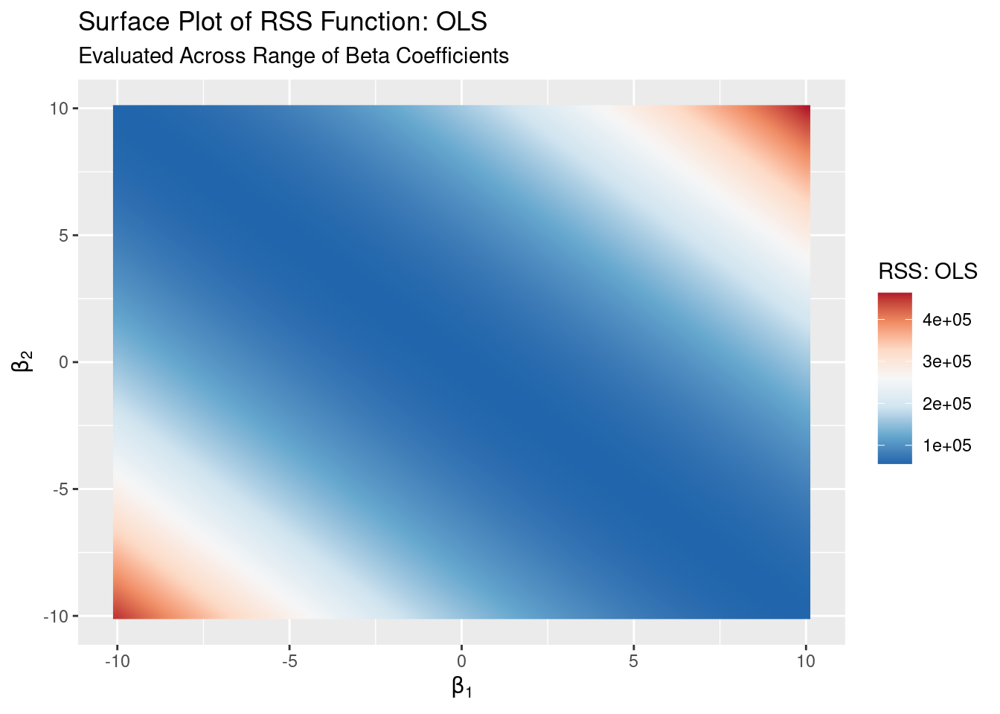
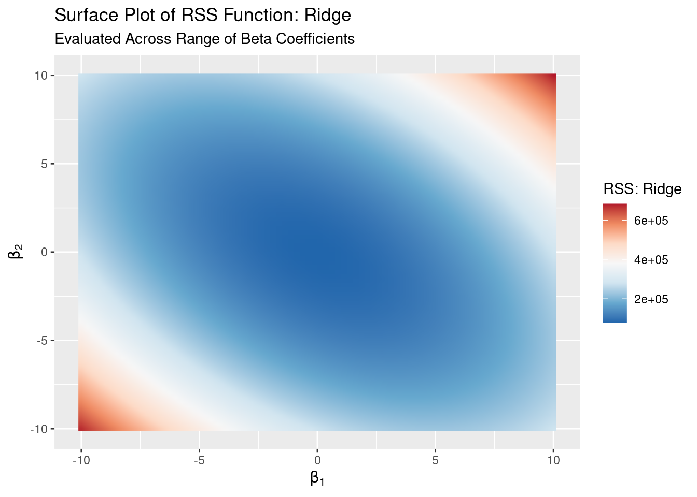

Case 1: Linearly Dependent Variables
First we’ll explore a simple case demonstrating how ridge regression can solve problems with linearly dependent variables when OLS can’t. This is just a particular case of rank-deficiency, the other one that can cause issues with OLS being having more variables (columns) than observations (rows) in your design matrix. Ridge regression can handle both cases.
Data Generation
For the cases in this example, load the tidyverse, MASS, latex2exp, ggcorrplot, and RColorBrewer packages.
library(tidyverse)
library(MASS)
library(latex2exp)
library(ggcorrplot)
library(RColorBrewer)We’ll create one normally-distributed variable and then a second variable that is simply a multiple of the first to make the two variables linearly dependent.
Let’s generate one variable with 1,000 observations, a mean between -10 and 10, and a standard deviation between 1 and 10.
X1 <- rnorm(1000, mean = runif(1, -10, 10), sd = runif(1, 1, 10))We’ll make X1 linearly dependent with a new variable, X2, by making X2 a variable that is simply X1 divided by two.
X2 <- X1 / 2Next we’ll write a standardization function9 and standardize both of our variables.
standardize <- function(vec){
sd <- sqrt(sum((vec - mean(vec))^2) / length(vec))
(vec - mean(vec)) / sd
}
X1_std <- standardize(X1)
X2_std <- standardize(X2)Lastly we’ll create a normally-distributed outcome variable.
y <- rnorm(1000, mean = runif(1, -10, 10), sd = runif(1, 1, 10))The Problem: OLS
Let’s run a simple linear regression and see what happens:
summary(lm(y ~ X1_std + X2_std))##
## Call:
## lm(formula = y ~ X1_std + X2_std)
##
## Residuals:
## Min 1Q Median 3Q Max
## -12.2228 -2.0556 -0.0106 2.2580 9.9584
##
## Coefficients: (1 not defined because of singularities)
## Estimate Std. Error t value Pr(>|t|)
## (Intercept) -8.1638 0.1028 -79.451 <2e-16 ***
## X1_std -0.1607 0.1028 -1.564 0.118
## X2_std NA NA NA NA
## ---
## Signif. codes: 0 '***' 0.001 '**' 0.01 '*' 0.05 '.' 0.1 ' ' 1
##
## Residual standard error: 3.249 on 998 degrees of freedom
## Multiple R-squared: 0.002444, Adjusted R-squared: 0.001444
## F-statistic: 2.445 on 1 and 998 DF, p-value: 0.1182As expected, R notes that our matrix is singular and returns NA for the X2 estimate.
But why is this? The objective of OLS is to minimize RSS, but clearly that’s not happening here. So let’s start there: we can evaluate the RSS function from the theory section over combinations of \(\beta_1\) and \(\beta_2\) values to take a look at the RSS surface.10.
Let’s build our RSS function.
RSS_OLS <- function(b_vec){
t(y) %*% y - 2 * t(b_vec) %*% t(design_matrix) %*% y + t(b_vec) %*% t(design_matrix) %*% design_matrix %*% b_vec
}Then we can create a dataset of \(\beta_1\) and \(\beta_2\) combinations and apply our function to it in order to evaluate the log likelihood functions for those \(\beta\) values.
b1_vec <- seq(-10, 10, .25)
b2_vec <- seq(-10, 10, .25)
surface <- bind_cols(mean(y), expand_grid(b1_vec, b2_vec))
design_matrix <- model.matrix(y ~ X1_std + X2_std)
surface$rss_ols <- apply(surface, MARGIN = 1, RSS_OLS)So what does our log-likelihood surface look like in this case?
rss_ols_surface_plot <- ggplot(surface, aes(x = b1_vec, y = b2_vec, fill = rss_ols)) +
geom_raster(interpolate = TRUE) +
# scale_fill_gradient(name = "RSS", high = 'red', low = 'blue') +
scale_fill_distiller(palette = "RdBu", name = "RSS: OLS") +
labs(title = "Surface Plot of RSS Function: OLS",
subtitle = "Evaluated Across Range of Beta Coefficients",
x = TeX("$\\beta_1$"),
y = TeX("$\\beta_2$"))
There’s a long valley! Clearly there’s not a unique minimum here: there are many combinations of \(\beta_1\) and \(\beta_2\) that could minimize RSS, so there is no unique solution with OLS! The valley in the RSS function corresponds to a ridge in the maximum likelihood surface.
A Solution: Ridge Regression
So how does ridge regression fix this optimization problem? By penalizing (or regularizing) our function!
Ideally we would choose our penalty term, \(\lambda\), optimally by cross-validating but we’ll arbitrarily set \(\lambda = 1,000\) here to illustrate how ridge regression changes the RSS surface. Following the steps for evaluating the OLS RSS, we’ll create our ridge RSS function.
RSS_ridge <- function(b_vec){
lambda <- 1000
t(y) %*% y - 2 * t(b_vec) %*% t(input_matrix) %*% y + t(b_vec) %*% t(input_matrix) %*% input_matrix %*% b_vec + lambda * t(b_vec) %*% b_vec
}As noted in the theory section, we do not penalize the intercept. So we will create an input matrix that only has our X1 and X2 variable values.
input_matrix <- cbind(X1_std, X2_std)
surface$rss_ridge <- apply(surface[2:3], MARGIN = 1, RSS_ridge)So what does our log-likelihood surface look like now?
rss_ridge_surface_plot <- ggplot(surface, aes(x = b1_vec, y = b2_vec, fill = rss_ridge)) +
geom_raster(interpolate = TRUE) +
scale_fill_distiller(palette = "RdBu", name = "RSS: Ridge") +
labs(title = "Surface Plot of RSS Function: Ridge",
subtitle = "Evaluated Across Range of Beta Coefficients",
x = TeX("$\\beta_1$"),
y = TeX("$\\beta_2$"))
This looks much more like a surface with a unique minimum! Adding the L2 penalty “lifts” up the ends of the long valley in the RSS surface to create a bowl, for which we can easily identify and solve for a unique minimum. This also makes it easy to see how this penalization pushes or shrinks our coefficients toward zero.
With OLS, we allow the least-squares solving process infinite space within which to find a unique solution, but this fails when we have a canyon in the RSS surface without a unique minimum. By applying the L2 constraint in the ridge regression definition of the problem we are restricting the solution space and forcing the solving process to find the best \(\beta_1\) and \(\beta_2\) that minimize RSS within that space. Residuals are a function of our \(\beta\)s, so this allows for residuals to be higher for some observations than they would be under OLS, which is evidenced by the “lifting” of the RSS surface above.
Choosing how much much space to allow (i.e., which value to use for \(\lambda\)) is another optimization problem that is context-dependent and usually addressed with cross-validation.
Solving for \(\hat{\beta}^{Ridge}\)
We can easily implement the \(\hat{\beta}^{Ridge}\) solution derived in the theory section. Let’s write a function, ridge, to solve for the ridge regression coefficients and use it to solve our ridge regression problem.
input_matrix <- cbind(X1_std, X2_std)
lambda <- 1000
ridge <- function(y_vec, X_matrix, lambda){
# Arguments:
# y_vec - a continuous outcome vector
# X_matrix - a standardized input vector
# lambda - a > 0 penalty term
penalty <- lambda * diag(1, ncol(X_matrix))
solve(t(X_matrix) %*% X_matrix + penalty) %*% t(X_matrix) %*% y_vec
}
b_vec_ridge <- ridge(y_vec = y, X_matrix = input_matrix, lambda = lambda)## [,1]
## X1_std -0.05355626
## X2_std -0.05355626In this case, because our standardized variables are identical, our ridge regression coefficients are identical.
Why not use
scale? Bothscaleandsduse Bessel’s correction to calculate the sample standard deviation. We instead use the population standard deviation.glmnet, the primary ridge regression implementation in R, uses the population standard deviation when standardizing variables.↩︎This is almost identical to what we do in the univariate binary logistic case with the maximum likelihood function.↩︎